Tablica I.
Tablica I.Przedrostki do tworzenia jednostek wielokrotnych i podwielokrotnych
| Nazwa | Oznaczenie | Znaczenie | Nazwa mnożnika |
| yotta | Y | 1024 = 1 000 000 000 000 000 000 000 000 | kwadrylion |
| zetta | Z | 1021 = 1 000 000 000 000 000 000 000 | tryliard |
| eksa | E | 1018 = 1 000 000 000 000 000 000 | trylion |
| peta | P | 1015 = 1 000 000 000 000 000 | biliard |
| tera | T | 1012 = 1 000 000 000 000 | bilion |
| giga | G | 109 = 1 000 000 000 | miliard |
| mega | M | 106 = 1 000 000 | milion |
| kilo | k | 103 = 1 000 | tysiąc |
| hekto | h | 102 = 100 | sto |
| deka | da | 101 = 10 | dziesięć |
| - | - | 100 = 1 | - |
| decy | d | 10-1 = 0,1 | jedna dziesiąta |
| centy | c | 10-2 = 0,01 | jedna setna |
| mili | m | 10-3 = 0,001 | jedna tysięczna |
| mikro | μ | 10-6 = 0,000 001 | jedna milionowa |
| nano | n | 10-9 = 0,000 000 001 | jedna miliardowa |
| piko | p | 10-12 = 0,000 000 000 001 | jedna bilionowa |
| femto | f | 10-15 = 0,000 000 000 000 001 | jedna biliardowa |
| atto | a | 10-18 = 0,000 000 000 000 000 001 | jedna trylionowa |
| zepto | z | 10-21 = 0,000 000 000 000 000 000 001 | jedna tryliardowa |
| yocto | y | 10-24 = 0,000 000 000 000 000 000 000 001 | jedna kwadrylionowa |
Tablica II.
Jednostki układu SI
| Wielkość | Jednostki miary | |
| nazwa | oznaczenie | |
| A. Jednostki podstawowe | ||
| Długość, odległość | metr | m |
| Masa | kilogram | kg |
| Czas | sekunda | s |
| Prąd elektryczny | amper | A |
| Temperatura | kelwin | K |
| Liczność materii | mol | mol |
| Światłość | kandela | cd |
| B. Jednostki uzupełniające | ||
| Kąt płaski | radian | rad |
| Kąt bryłowy | steradian | sr |
Metr jest to długość równa 1 659 763.73 długości fali
Kilogram jest to masa międzynarodowego wzorca tej jednostki przechowywanego
Sekunda jest to czas równy
Amper jest to prąd elektryczny nie zmieniający się, który płynąc w dwóch równoległych prostoliniowych, nieskończenie długich przewodach
Kelwin jest to 1/273,16 temperatury termodynamicznej punktu potrójnego wody.
Mol jest to liczność materii występująca, gdy liczba cząstek jest równa liczbie atomów zawartych
1 mol=6,023 x 1023cząstek
Przy stosowaniu mola należy określić rodzaj cząstek. Mogą nimi być: atomy, drobiny (cząsteczki), jony, elektrony, inne cząstki albo określone zespoły takich cząstek.
Kandela jest to światłość źródła emitującego w określonym kierunku promieniowanie monochromatyczne o częstotliwości 540 x 1012 herców i o natężeniu promieniowania w tym kierunku równym 1/683 wata na steradian. (dawniej definiowano: kandela jest to światłość, jaką ma w kierunku prostopadłym powierzchnia
Radian jest to kąt płaski, zawarty miedzy dwoma promieniami koła, wycinającymi
Steradian jest to kąt bryłowy
Tablica III.
Jednostki pochodne układu SI wybranych wielkości
| Wielkość | Jednostki miary | Wyrażenie jednostek pochodnych za pomocą jednostek podstawowych |
Uwagi | |
| nazwa | oznacze- nie |
|||
| Wielkości mechaniczne | ||||
| Powierzchnia | metr kwadratowy | 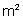 | 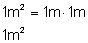 | Stosowana jest również nazwa: pole powierzchni |
| Objętość | metr sześcienny | 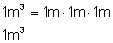 | ||
| Częstotliwość | herc | 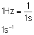 | ||
| Prędkość liniowa | metr na sekundę | 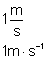 | Stosuje się do wyrażania prędkości akustycznej | |
| Prędkość kątowa | radian na sekundę | 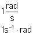 | ||
| Przyspieszenie liniowe | metr na kwadrat sekundy | 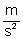 | 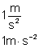 | |
| Przyspieszenie kątowe | radian na kwadrat sekundy | 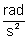 | 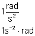 | |
| Gęstość (masy) | kilogram na metr sześcienny | 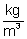 | 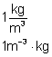 | |
| Pęd | kilogramometr na sekundę | 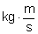 | 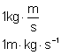 | |
| Siła | niuton | 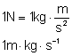 | ||
| Moment siły | niutonometr | 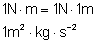 | ||
| Ciśnienie | paskal | 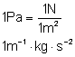 | Stosuje się odpowiednio do wyrażania naprężenia mechanicznego, ciśnienia akustycznego itp. | |
| Napięcie powierzchniowe | niuton na metr | 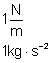 | ||
| Energia, praca | dżul | 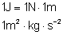 | Stosuje się również do wyrażania energii cieplnej (ciepła), energii elektrycznej, energii promieniowania, energii wewnętrznej, entalpii itp. | |
| Udarność | dżul na metr kwadratowy | 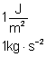 | ||
| Moc | wat | 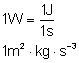 | Stosowana jest również nazwa: strumień energii. Stosuje się również do wyrażania mocy cieplnej, mocy elektrycznej, mocy promieniowania itp. | |
| Gęstość mocy (powierzchniowa) | wat na metr kwadratowy | 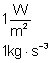 | Stosowana jest również nazwa: gęstość strumienia energii. Stosuje się odpowiednio do wyrażania gęstości mocy cieplnej, natężenia napromieniowania, natężenia dźwięku, gęstości mocy promieniowania jonizującego itp. | |
| Lepkość dynamiczna | paskalosekunda | 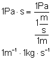 | ||
| Lepkość kinetyczna | metr kwadratowy ma sekundę | 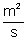 | 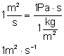 | |
| Strumień objętości | metr sześcienny na sekundę | 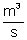 | 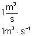 | Stosowana jest również nazwa: przepływ objętości. Stosuje się również do wyrażania prędkości objętościowej akustycznej. |
| Strumień masy | kilogram na sekundę | Stosowana jest również nazwa: przepływa masy. | ||
| Gęstość strumienia masy | kilogram na sekundę i metr kwadratowy | 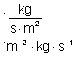 | Stosowana jest również nazwa: gęstość przepływu masy. | |
| Wielkości cieplne | ||||
| Pojemność cieplna | dżul na kelwin | 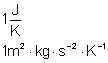 | ||
| Entalpia właściwa | dżul na kilogram | 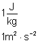 | Stosuje się również do wyrażania energii właściwej, energii wewnętrznej właściwej itp. | |
| Ciepło właściwe | dżul na kilogram i kelwina | 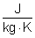 | 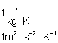 | Stosowana jest również nazwa: pojemność cieplna właściwa. |
| Wielkości elektryczne i magnetyczne | ||||
| Gęstość prądu elektrycznego | amper na metr kwadrat | 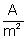 | 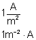 | |
| Ładunek elektryczny | kulomb | 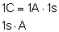 | ||
| Napięcie elektryczne, siła elektromotoryczna, potencjał elektryczny | wolt | 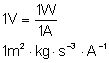 | ||
| Pole elektryczne | wolt na metr | 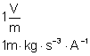 | Stosowana jest również nazwa: natężenie pola elektrycznego. | |
| Pojemność elektryczna | farad | 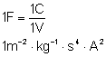 | ||
| Opór elektryczny | om | 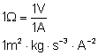 | Stosuje się do wyrażania: rezystancji, reaktancji | |
| Opór elektryczny właściwy, rezystywność elektryczna | omometr | 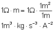 | ||
| Przewodność elektryczna | simens | 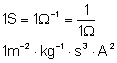 | Stosuje się do wyrażania: kondutancji, suspedancji | |
| Przewodność elektryczna właściwa, konduktywność elektryczna | simens na metr | 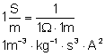 | W odniesieniu do elektrolitów bywa też stosowana nazwa: przewodność elektryczna właściwa. | |
| Strumień magnetyczny | weber | 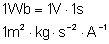 | Stosowana jest również nazwa: strumień indukcji magnetycznej. | |
| Indukcja magnetyczna | tesla | 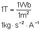 | ||
| Pole magnetyczne | amper na metr | 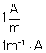 | Stosowana jest również nazwa: natężenie pola magnetycznego. | |
| Indukcyjność | henr | 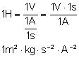 | ||
| Siła magnetomotoryczna, napięcie magnetyczne | amper | |||
| Wielkości optyczne | ||||
| Zdolność skupiająca układu optycznego | metr do potęgi minus pierwszej | 
| ||
| Liczba falowa | metr do potęgi minus pierwszej | 
| ||
| Natężenie napromienienia | wat na metr kwadratowy | 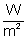 | 
| |
| Napromienienie | dżul na metr kwadratowy | 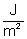 | 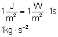 | |
| Luminacja energetyczna | wat na metr kwadratowy | 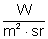 | ||
| Strumień świetlny | lumen | |||
| Ilość światła | lumenosekunda | |||
| Natężenie oświetlenia | luks | |||
| Luminacja | kandela na metr kwadratowy | |||
| Naświetlenie | luksosekunda | |||
| Wielkości fizykochemiczne | ||||
| Masa molowa | kilogram na mol | |||
| Objętość molowa | metr sześcienny na metr | |||
| Energia wewnętrzna molowa | dżul na mol | |||
| Pojemność cieplna molowa | dżul na mol | |||
| Stężenie molowe | mol na metr sześcienny | |||
| Molalność | mol na kilogram (rozpuszczalnika) | |||
| Wielkości promieniowania jonizującego | ||||
| Dawka pochłonięta | grej | |||
| Moc dawki pochłoniętej | grej na sekundę | |||
| Dawka ekspozycyjna | kulomb na kilogram | |||
| Moc dawki ekspozycyjnej | amper na kilogram | |||
| Aktywność ciała promieniotwórczego | bekerel | |||
| Gęstość strumienia cząstek | metr do potęgi minus drugiej razy sekunda do potęgi minus pierwszej | |||
Tablica IV.
Legalne jednostki miar wybranych wielkości nie należące do układu SI
| Wielkość | Jednostki miary | Wyrażenie jednostek pochodnych za pomocą jednostek podstawowych |
Uwagi | |
| nazwa | oznacze- nie |
|||
| Długość, odległość | jednostka astrono- miczna długości | Jednostka astronomiczna długości jest to długość promienia nieperturbowanej orbity kołowej ciała o masie znikomo małej, które krązy dookoła Słońca z prędkością kątową gwiazdową 0,0017 202 098 950 radiana na dobe mającą 86400 sekund efemerydalnych | Do stosowania | |
| parsek | Parsek jest to odległość środka koła od jego cięciwy o długości | |||
| Masa | tona | |||
| Czas | minuta godzina doba |
|
| Jednostki kalendarzowe dzień, tydzień, miesiąc, rok |
| Temperatura | stopień Celsjusza | Dla różnicy temperatur | Stosuje się do wyrażania temperatury Celsjusza t | |
| Kąt płaski | stopień | |||
| minuta | ||||
| sekunda | ||||
| grad | ||||
| Powierzchnia | hektar | Stosuje się do wyrażania powierzchni gruntów. | ||
| Objętość, pojemność | litr | Stosuje się do pomiarów objętości płynów i ciał sypkich. | ||
| Prędkość liniowa | kilometr na godzinę | |||
| Prędkość obrotowa | obrót na sekundę | Stosowana jest również nazwa: częstość obrotów | ||
| obrót na minutę | ||||
| Gęstość (masy) | kilogram na litr | Stosuje się do wyrażania gęstości płynów i ciał sypkich. | ||
| Energia, praca | kilowato- godzina | |||
| elektronowolt | Elektronowolt jest to energia kinetyczna, jaką uzyskuje elektron po przejściu w próżni drogi miedzy dwoma punktami, gdy różnica potencjałów miedzy tymi punktami jest równa 1V (wolt) | Do stosowania w technice jądrowej i dziedzinach związanych. | ||
| Strumień objętości | metr sześcienny na minutę | Stosowana również nazwa: przepływ objętości. | ||
| metr sześcienny na godzinę | ||||
| litr na sekundę | ||||
| Strumień masy | kilogram na godzinę | Stosowana jest również nazwa: przepływ masy. | ||
| tona na godzinę | ||||
| Ładunek elektryczny | ampero- godzina | |||
| Moc | woltoamper | Do wyrażania mocy elektrycznej pozornej. | ||
| var | Do wyrażania mocy elektrycznej biernej. | |||
| Ilość światła | lumeno- godzina | |||
| Poziom (bezwzględny) ciśnienia akustycznego | bel | Bel jest to poziom ciśnienia akustycznego występujący, gdy podwojony logarytm dziesiętny stosunku tego ciśnienia do ciśnienia odniesienia
(paskala) jest | ||
| decybel | ||||
| Poziom głośności | fon | Fon jest to poziom głośności dźwięku o częstotliwości 1000Hz (herców) i poziomie ciśnienia akustycznego | ||
| Masa atomowa | jednostak masy atomowej | Jednostka masy atomowej jest to masa atomowa równa
części masy atomowej
(węgla 12) | ||
| Objętość molowa | litr na mol | |||
| Stężenie molowe | mol na litr | |||
| Ilość informacji | bit | Bit jest ilość inforamcji, jaka odpowiada zajściu jednego | ||
| Strumień informacji | bit na sekundę | Bit na sekundę jest to strumień informacji, przy którym ilość informacji | ||
| Zdolność skupiająca układu optycznego | dioptria | |||